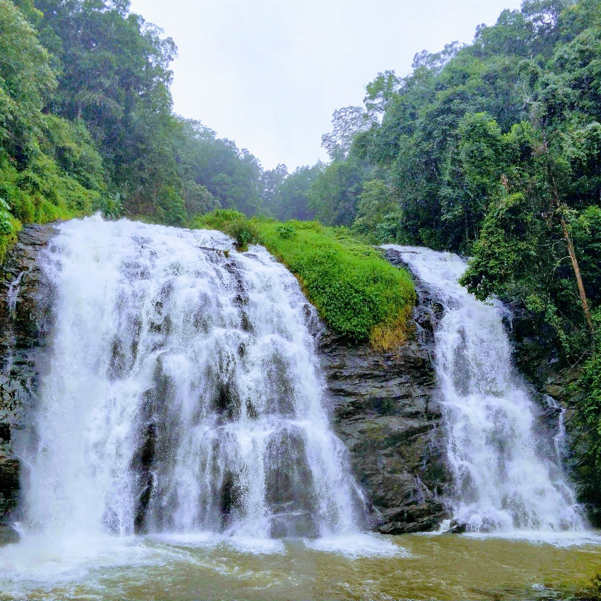

Abbey Falls

Abbey Falls is a popular tourist attraction located near the town of Madikeri in the Kodagu district
of Karnataka, India. It is known for its scenic beauty and is a popular destination for nature lovers and photographers.
The falls are situated amidst lush green coffee plantations and are formed by the cascading waters of the Kaveri River.
The water plunges from a height of about 70 feet (21 meters) into a pool below, creating a breathtaking sight. The sound
of the water gushing down and the misty atmosphere around the falls add to its charm.
To reach Abbey Falls, visitors need to trek through a well-laid path surrounded by dense vegetation. The area around
the falls is beautifully landscaped with hanging bridges, viewpoints, and seating areas, providing visitors with ample
opportunities to enjoy the scenery and capture memorable photographs.
Iruppu Falls
Iruppu Falls, also known as Lakshmana Tirtha Falls, is another popular waterfall located in the Kodagu district of Karnataka,
India. It is situated in the Brahmagiri Range, close to the border between Karnataka and Kerala.
Iruppu Falls is renowned for its religious significance as well as its scenic beauty. According to Hindu mythology,
it is believed that Lord Rama and his brother Lakshmana passed through this area during their search for Sita, and
Lord Rama shot an arrow into the Brahmagiri hills, resulting in the formation of the Lakshmana Tirtha River, from which the falls originate.
The waterfall cascades down from a height of approximately 170 feet (52 meters) in two stages, creating a mesmerizing sight.
The water flows through a rocky terrain surrounded by dense forest, providing a serene and picturesque setting.
Mallalli Falls
Mallalli Falls is a popular waterfall located in the state of Karnataka, India. It is situated in the Coorg district,
approximately 25 kilometers from the town of Somwarpet. Mallalli Falls is formed by the Kumaradhara River, which cascades
down from a height of about 200 feet (60 meters).
The waterfall is known for its natural beauty and is surrounded by lush greenery, making it a picturesque destination for nature lovers and
photography enthusiasts. The falls are at their best during the monsoon season, from June to September when the river is in full flow. The gushing
water creates a mesmerizing sight as it crashes against the rocks and creates a misty atmosphere.
Chelavara Falls

Chelavara Falls, also known as Embepare Falls or Sikki Falls, is a picturesque waterfall located in the Coorg district of Karnataka, India.
It is situated near the town of Chelavara, which is approximately 16 kilometers from the popular tourist destination of Madikeri.
The waterfall is a natural beauty, cascading down from a height of about 150 feet into a pool below. Surrounded by lush greenery and dense forests,
Chelavara Falls offers a serene and tranquil atmosphere, making it a popular spot for nature lovers and tourists seeking a peaceful getaway.
The best time to visit Chelavara Falls is during the monsoon season, which typically lasts from June to September, as the waterfall is at its peak
flow during this time. However, it's important to note that the area can get slippery and treacherous during heavy rainfall, so caution should be exercised while exploring the surroundings.
Burude Falls
Dodmane Falls, also known as Burude Falls, is a popular waterfall located in the state of Karnataka, India. It is situated near the village of Dodmane, which is about 17 kilometers from the town of Siddapur in the Uttara Kannada district.
Dodmane Falls is nestled in the lush greenery of the Western Ghats, a mountain range that runs along the western coast of India. The waterfall cascades down from a height of approximately 70 meters (230 feet) and creates a picturesque sight surrounded by dense forests and rocky cliffs.
The name "Dodmane" translates to "ancestral house" in the local Kannada language, and the falls derive their name from a large ancestral house located nearby. The waterfall is a popular tourist attraction and is known for its natural beauty, especially during the monsoon season when it is at its fullest and most captivating.
Napandapole Falls
One of the most spectacular Coorg Waterfalls is the Nandapole Falls. With numerous obscure corners around the waterfall, your hiking bug won’t get enough of this place. Blanketed by three sub waterfalls, and some forest fencing makes it a great destination away from the regular crowded sites.
At Nandapole falls the water rains down from 120 feet over steep rocky surface which also makes it ideal for water rappelling and keeps the spark of adventure ignited within you.
Distance from Coorg: It is located at a distance of almost 58 km from Coorg bus stand.
Height: Thi waterfall is seated at an altitude of almost 120 feet.
Best time to visit: When the monsoons outbreak, the beauty of the falls increases which make it the best time to visit the fall, that id from July to September.
Devarakolli Falls
Marking its place in one of the most striking Coorg waterfalls, Devarakolli falls showcases a splendor which will put you under a spell with its realm.
This is something which you cannot afford to miss if you are tracing the region with your friends or family. The image of the waterfall is absolutely splendid and you can witness the tiny brooklets peeking from the greens.
Distance from Coorg: It is located at a distance of almost 16 km from Coorg bus stand.
Height: Though, the height is too low that is, 75 feet but still this waterfall showcases breathtakingly beautiful views.
Best time to visit: With the onset of monsoons, the charm of the zone multiplies and months from July to September are well-suited.
Devaragundi Falls
When it comes to tracing the list of waterfalls in Coorg, Devaragundi waterfalls is an unmissable part, as it extends picture-perfect views and it just one-of-its-kind. With the literal meaning “God’s pool”, it is a creation of streams of Thodikana.
Something which sets this apart is it can be reached by taking a small stroll through the jungles, where you can feel close to nature and experience the wilderness it owns.
Distance from Coorg: It is located at a distance of almost 43.3 km from Coorg bus stand.
Height: The elevation of the waterfall is about 70 feet.
Best time to visit: The best time to visit this waterfall is from August to December, right after the monsoons.